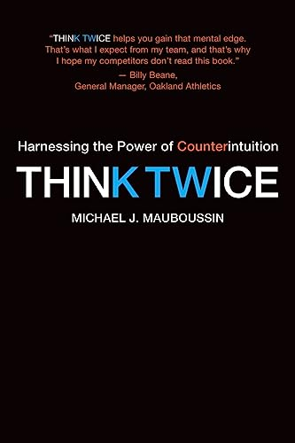

迈克尔·莫布森（Michael J. Mauboussin）长期担任瑞士信贷和摩根士丹利的首席投资策略师，同时在哥伦比亚商学院执教多年，是将认知科学、心理学与投资决策研究融合最为出色的从业者之一。《再想一想》出版于2009年，由哈佛商学院出版社出版，是莫布森研究人类决策失误的集大成之作。与许多同类题材的书籍不同，本书并不满足于列举认知偏差的清单，而是深入探讨了为什么那些在进化和日常生活中帮助我们高效运作的直觉，在面对复杂系统、概率问题和非线性反馈时会系统性地失灵。
书中核心论点是：人类大脑处理信息的方式与复杂决策环境的要求之间存在根本性错配。莫布森将这一错配概括为"直觉的陷阱"——我们倾向于将当前情境与过去的经验模式快速匹配，在简单、重复性高的场景中这是高效的；但在金融市场、商业战略、医疗决策等系统复杂、反馈延迟的领域，这种快捷思维往往导致错误。他通过军事决策、医疗诊断、运动选拔和投资管理等多个领域的案例，系统性地展示了"第一直觉"在何种条件下值得信赖，在何种条件下必须强制自己"再想一想"。
在投资领域的应用中，莫布森特别指出了均值回归（Mean Reversion）的反直觉性——我们倾向于将出色的近期业绩外推为未来持续表现的预测，但大量数据表明，无论是公司盈利、基金经理表现还是运动员的状态，高水平之后往往紧随着向均值的回归。另一个关键论点是"局外人视角"（Outside View）的价值：在评估一项计划或投资时，与其依赖对具体情况的深入分析，不如先参考历史上类似情况的基础概率，再加以调整。这一方法与丹尼尔·卡尼曼等行为经济学家的研究高度吻合，但莫布森将其落地为具体的决策工具。
《再想一想》的价值不在于提供固定的决策公式，而在于培养读者对自身思维过程的元认知能力。正如莫布森在书中所言，改善决策质量的第一步，是认识到我们的大脑并非一台理性计算机，而是一个充满捷径与偏见的预测机器——理解这一点本身，就是迈向更好判断的起点。对于投资者、企业管理者以及任何需要在不确定环境中反复做出重要决策的读者，本书提供了兼具学术深度与实践指导价值的思维框架。